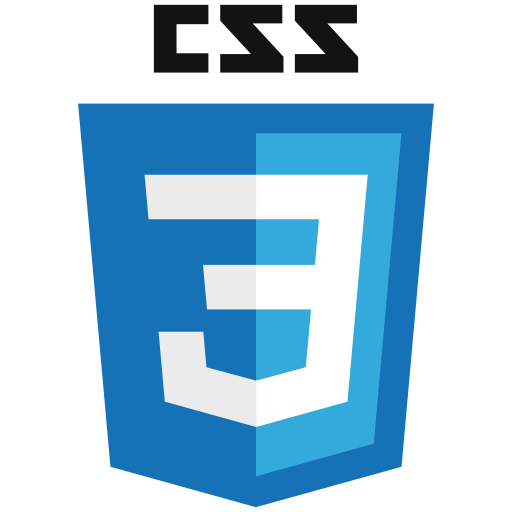

Elementos HTML
Alguns elementos utilizados para estruturar uma página são:
h1— título principal.p— parágrafo.a— link.img— imagem.ul— lista não ordenada.
Fundamentos de HTML, CSS e desenvolvimento Web

O desenvolvimentoFront-end está relacionado à parte de uma aplicação que o usuário visualiza e utiliza diretamente.
Para desenvolver uma aplicação Web é importante compreender estrutura, apresentação e comportamento.
HTML não é responsável por criar o design da página. Sua principal função é estruturar o conteúdo.
O desenvolvimento Front-end utiliza diferentes tecnologias que trabalham em conjunto.
HTML define a estrutura, CSS trabalha a apresentação e JavaScript permite adicionar comportamentos.
HTML é uma linguagem de marcação utilizada para estruturar documentos Web.
Um documento HTML é composto por elementos. Por exemplo, o elemento p representa um parágrafo.
Já o elemento a pode ser utilizado para criar um link.
Alguns elementos utilizados para estruturar uma página são:
h1— título principal.p— parágrafo.a— link.img— imagem.ul— lista não ordenada.Os atributos fornecem informações adicionais sobre os elementos HTML.
HTML semântico significa utilizar elementos que representam o significado do conteúdo.
Em vez de utilizar apenas div para toda a página, podemos utilizar elementos específicos para representar cada parte.
A tag div continua sendo útil para agrupamentos genéricos.
Este conteúdo está dentro de uma div porque não possui uma função semântica específica.
O HTML também possui elementos utilizados para representar o significado de pequenos trechos de texto.
A tag strong indica grande importância.
A tag em pode indicar ênfase em determinada informação.
A tag mark pode destacar uma informação importante.
A tag small pode apresentar uma observação.Esta é uma informação complementar.
AAPIpermite a comunicação entre diferentes sistemas.
Uma fonte bastante conhecida para consulta é a MDN Web Docs.
Uma frase bastante conhecida entre programadores é: primeiro aprenda a pensar, depois aprenda a programar.
O conhecimento dos fundamentos é importante para compreender tecnologias mais complexas.
Este guia foi atualizado em
A próxima atualização ocorrerá em
Pequenos trechos de código podem ser representados utilizando code
Por exemplo: <p>Olá, mundo!</p>
<h1>Olá, mundo!</h1>
<p>
Minha primeira página HTML.
</p>
<a href="https://www.w3.org/">
W3C
</a>
Para salvar o arquivo utilize:Ctrl + S.
Para copiar utilize:Ctrl + C.
Para colar utilize:Ctrl + V.
Ao executar determinado programa, o sistema pode apresentar a seguinte mensagem:
Arquivo salvo com sucesso.Outro exemplo de saída:
Erro: arquivo não encontrado.Em programação, uma variável pode armazenar diferentes valores.
Considere a expressão:
x = 10Podemos também representar:
x = 10
